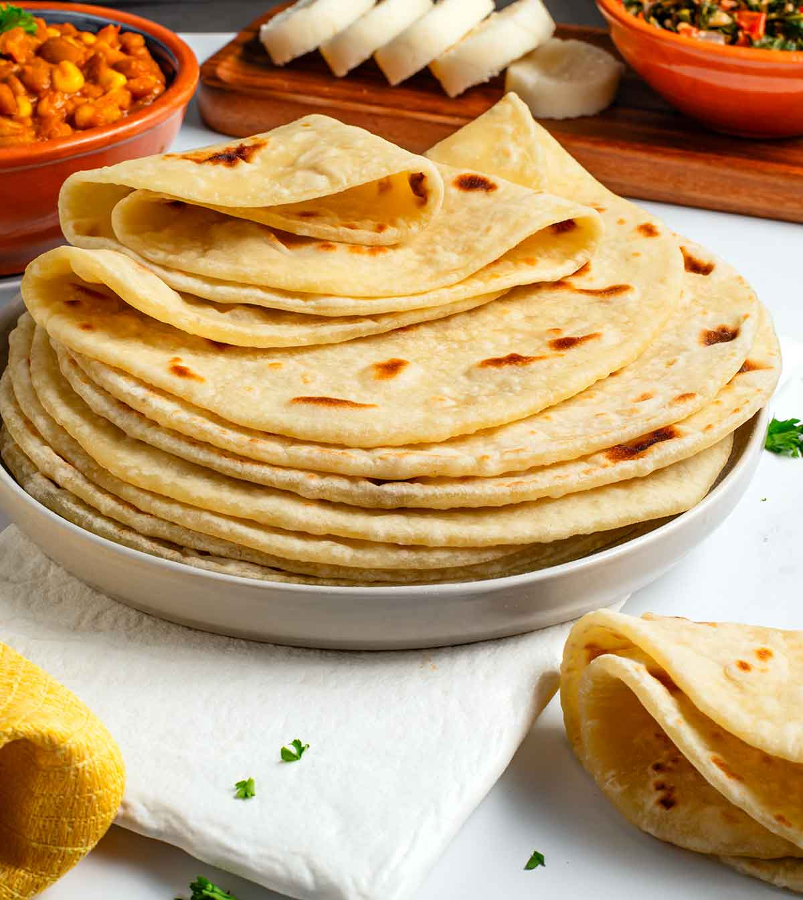
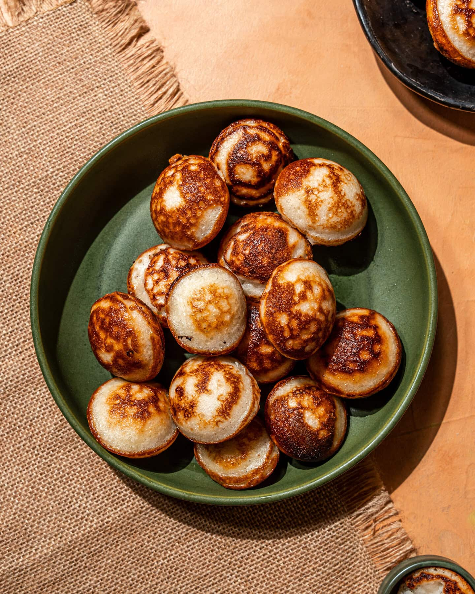

How to make chapati:

click here to view full preparations
1 1/4 cup warm water, boiled and cooled
1/4 cup vegetable oil + 1 tsp (plus more for cooking the chapati)
4 cups all purpose flour, spooned and leveled (500 g, plus more for rolling)
|
How to make Vitumbua:

click here to view full preparations
2 teaspoons instant yeast
1/2 teaspoon cardamom powder
|
|